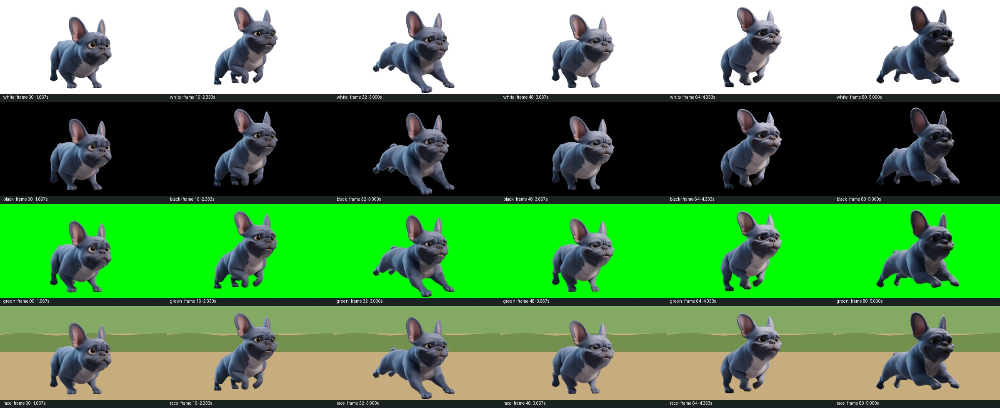

Бульдог №4 · тест alpha
Отдельная проверка удаления фона. Бег: кадры 40–120 исходника, 24 fps. В прототип гонки не встроено.
Скачать WebM с alpha Скачать видео на четырёх фонах Контрольные кадры Отчёт
Видео не зациклено специально: стык RUN-секции в этом тесте не правился.
